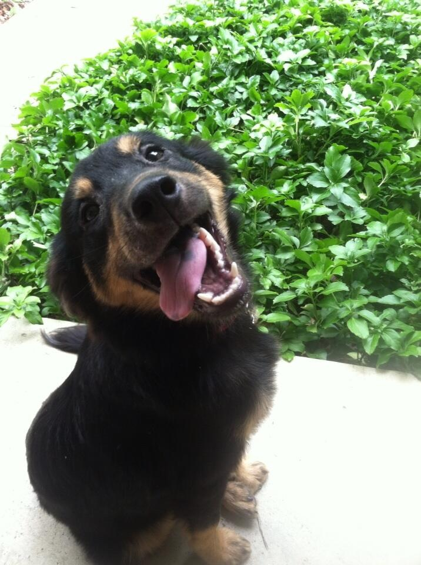
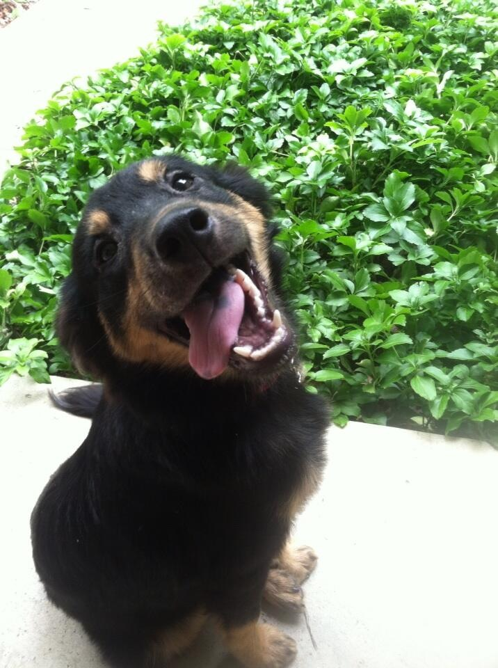

Pets
Bacon Q Dog

Bacon Q. Dog is a 9yr old labradoodle. He prefers to spend his days lounging among the three different beds/couches that his family has gifted him. He enjoys a walk or two around the neighborhood, as long as he can pretend that he doesn't see any of the other animals to avoid the embarrassment of not wanting to admit he has no wolf-like skills in chasing them.
At night just as the rest of the family is ready to relax, Bacon suddenly wants to release all of his energy. He will place his toys on a mini couch and frantically drag the couch around, giving his toys "a ride." There is also a lot of rolling. Lots and lots of rolling.
Photo Gallery


Likes
- Belly rubs
- Playing tug-of-war
- Sneaking onto the couch
Fitz

Loves chasings tennis balls, chipmunks, squirrels, and birds. Often found sitting by the fire in wintertime, and in sun patches when available. He’s energetic, mischievous, and easily bored. He loves people and gets grumpy if left without a lap too long.
Loves barking up trees, running around on the lawn, and digging in the dirt looking for moles. He especially likes getting treats and whines when he comes inside and doesn’t get a snack.
Photo Gallery


Likes
- Blankets
- Being warm
- Barking
Rocket

Rocket (also named huihui) is a 6-month pomeranian puppy with big eyes and a small, black cute nose. Rocket is named rocket because he runs so fast and energetic all day without even having some rest. Rocket loves to carry his little toy walking around the house and jumping towards my bed.
Rocket is friendly to all human beings. He will be a little shy at first, but will ‘say hi’ to you after a few seconds. He is also friendly to dogs, especially the small breed, because the large size dogs are hard for him to smell lol. If you meet rocket, don’t hesitate to say hi to him!! He will be super happy the whole day.
Photo Gallery


Likes
- Chewing bones
- Chasing
- Running
Juno

No one knows exactly what breed Juno is, but that makes him all the more special. He was adopted before he was one year old; despite this and his German shepherd-esque looks, he stayed close to the same size, hovering around 50 lbs into adulthood. At the weathered age of ten years old, Juno is dealing with hip problems, but manages to stay in good spirits.
One of Juno’s favorite pastimes is finding the dirtiest puddle within a one-mile radius and making sure every inch of him makes contact with said puddle. If rolling around in dirt was an Olympic sport, Juno would have been the one that facilitated its inclusion into the Olympics.
Photo Gallery


 

Likes
- Human food
- Head pats
- Sleeping
Sprout

Sprout, a shy and elusive kitten when he first arrived at four months old, gradually became an affectionate companion. He enjoyed sleeping on my bed, but his early morning wake-up calls at 6:30 AM were a daily routine.
During my challenging academic phase, Sprout became my constant companion during late-night drawing sessions, quietly curling up on my lap, providing comfort and banishing solitude.
Photo Gallery


Likes
- Egg
- Playing with Naer and my tennis string
- Sleeping in sunshine